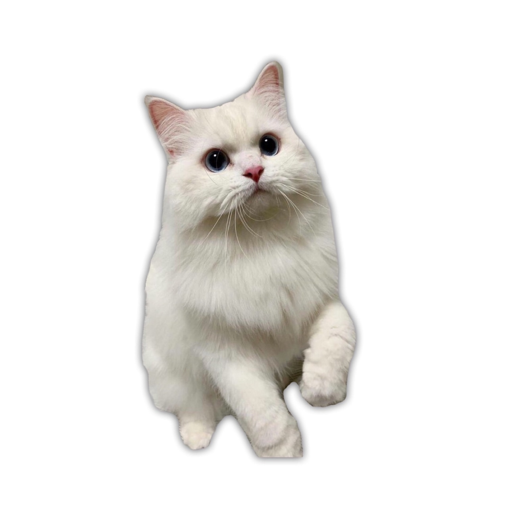
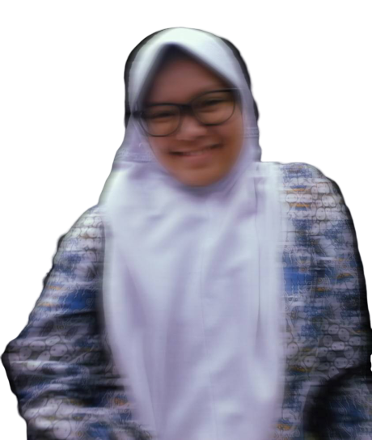
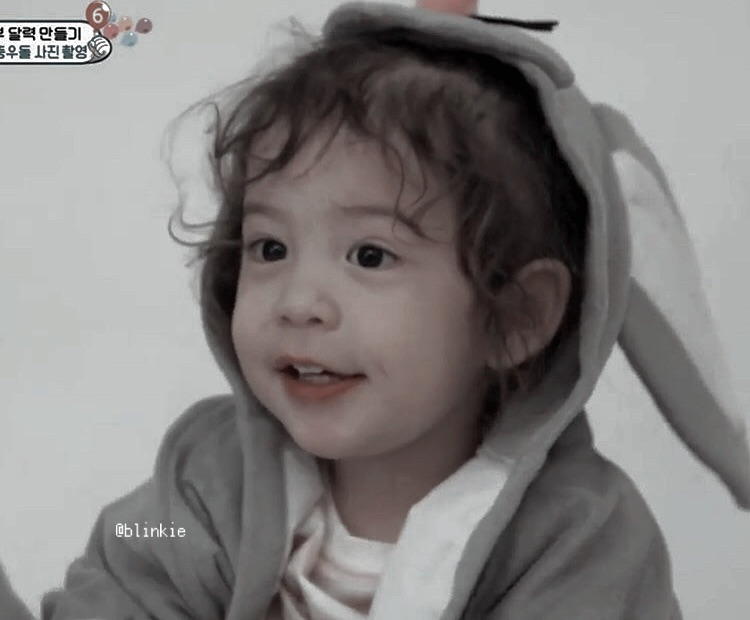
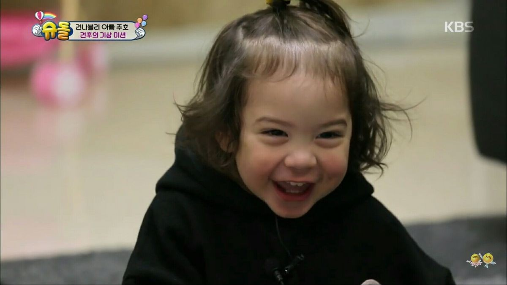
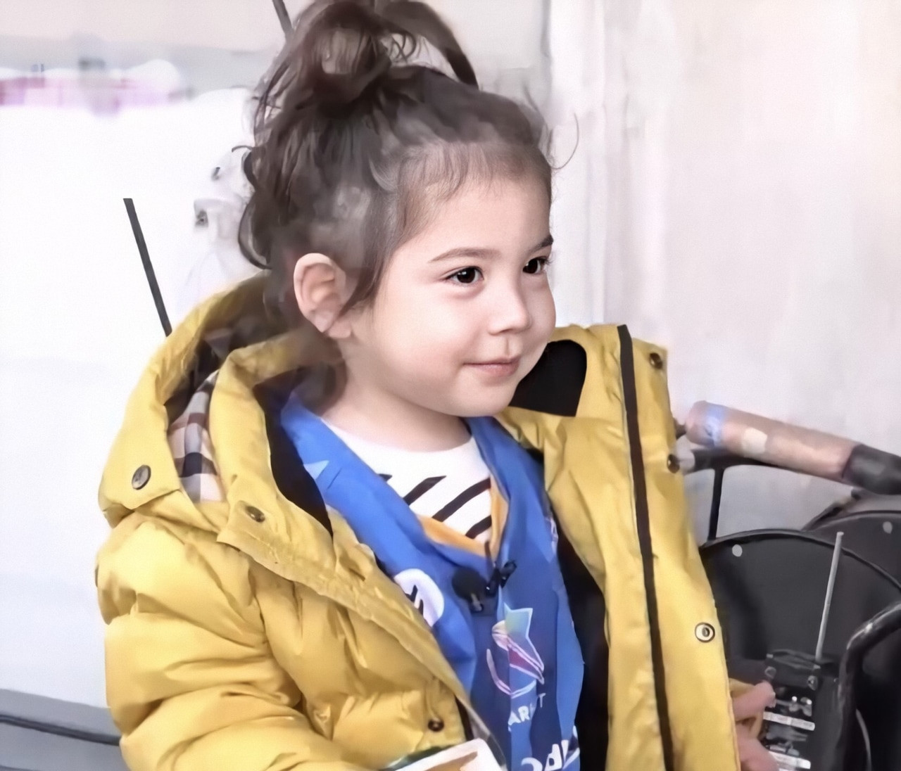
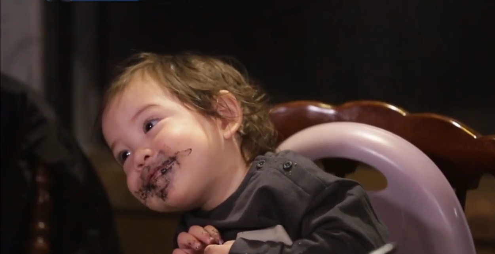
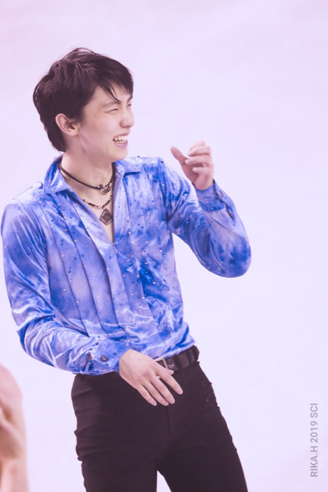

Project Learning On Ciwaruga
Our Motto
"Cekrek"
Our Chant
Seperti bintang
Takdirnya bersinar terang
Menjadi harapan
Tak padam ditelan masa
Our Superheroes
Aldy Akbarrizky
Amalia Hajarani
Kartika Milenda
Marissa Nur Amalia
Muhammad Fauzan Lubis
Aldy Akbarrizky
Man of Culture
Biodata
Nama : Andini Aldini Aldy Akbarrizky
TTL : Cimahi, 18 Oktober 2000
Alamat : Panembakan, Cimahi Tengah
Dreams
I want to be a writer
Anddd... Here It is...
Top 5 Most Favorite Anime Series
(For me, of course...)
Numba Wan
Yahari Ore no Seishun Rabu Come wa Machigatteiru
やはり俺の青春ラブコメはまちがっている
Numba Two
Saenai Heroine no Sodatekata
冴えない彼女（ヒロイン）の育てかた
Numba Three
Dungeon ni Deai wo Motomeru no wa Machigatteiru Darou ka?
ダンジョンに出会いを求めるのは間違っているだろうか
Numba Four
Gintama
銀魂
Numba Five
Every Anime Where He Voices The Main Character
Matsuoka Yoshitsugu
松岡 禎丞
It's Me
Biodata
Amalia Hajarani
SMAN 3 Tasikmalaya
Surabaya 21 Maret 2001
Cita-cita dan Hobi
Living my best life
and..
Eating ice cube as well
Top Five Aciel's Face

.jpg)



Kartika Milenda
Profile

Nama : Kartika Milenda
Birthday : 22 Februari 2000
Hobby : Baca Novel
Asal Sekolah : SMAN 24 Bandung
Cita - cita : Dokter
My Sunshine
5 Top Bias
First Of all...
... i should ...
... hm ...Let's see ....
Yuzuru Hanyu
<section ="hope&legacy" >
Kang Taehyun
<section ="magic hour" >
Noa Kazama
<section ="lights up" >Choi Raesung
<section ="queen love scenario" >Levi Ackerman
<section ="KENNYYY!!!!" >Marissa Nur Amalia
This is my normal profile
UwU

Hai it's mee
B i o d a t a
Nama : Marissa Nur Amalia
Birthday : 24 Januari 2001
Hobby : Baca Novel, Fangirling, dan Rebahan
Asal Sekolah : SMAN 8 Jakarta
Cita Cita
masih belum nemu hehe
That's it, time to go back up.
Marissa's 5 Favorite Things...
...When Gabut Time is Coming
1. Rebahan
2. Youtube
3. Boba and Snack
4. Lofi Music
5. Number 1 to 4 combined together..
... a perfect combination.
Muhammad Fauzan Lubis
I am once again asking for your willingness to stop this "project" abomination.
Muhammad Fauzan Lubis
DOB : 26 February 2001
POB : Bandung
Hobbies :
1. Certainly not This
2. Mountain Biking
3. Outdoor stuff in general
Asal sekolah :
1. SMANOP!!!!
2. GREE ONE
3. MI Asih Putera
Air
counting from worst to best
Radioactive Air
These Guys are clearly not healthy, but pretty rad
Fart
Not as bad as radioactive air, but clearly bad. Though, its kinda funny sometimes.
Canned Air
Kinda ok I guess, though these bois are very portable thats what makes them great
Plain Air
Everywhere, and free. These are the amazing! Not the best though!